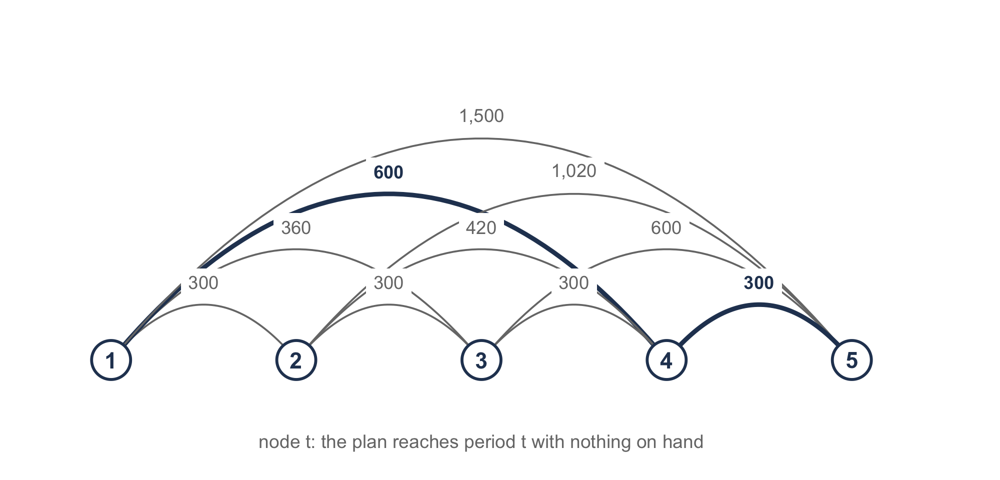
5 Dynamic Lot Sizing
NoteLearning objectives
After reading this chapter you should be able to:
- explain why the economic order quantity argument fails when the demand rate changes over time
- formulate the lot sizing problem for time-varying deterministic requirements
- state the zero-inventory ordering property and use it to reduce the problem to a choice of order periods
- derive the window cost of a replenishment and compute it for every pair of periods
- solve the problem to optimality with the Wagner-Whitin recursion and read the plan off the traceback
- formulate the same problem as a mixed integer program
- apply the Silver-Meal, least unit cost, and part-period balancing heuristics
- evaluate the cost penalty of a heuristic and say when a heuristic pays at all
- explain what a rolling horizon does to all of these methods
Chapter 3 decided one order quantity and used it forever. That was possible because the demand rate never changed. The stock fell at the same slope, the cycles were identical, and a cost per unit time could be written for a single cycle and minimized. Chapter 4 removed the assumption that items could be decided independently, but it left the constant rate in place.
In this chapter we remove the constant rate. Demand is still known in advance and still deterministic, but it now varies from period to period. We take up how to state the problem, how to solve it exactly, how to solve it quickly, and what happens to all of that when the horizon slides forward a period at a time.
5.1 When the Demand Rate Changes
A distributor of turf-equipment parts stocks a mower deck belt. The belt sells almost nowhere in the winter, very heavily in the spring, and then again in the autumn as dealers build up for the following season. The forecast for the coming twelve months is given in Table 5.1.
| \(t\) | 1 | 2 | 3 | 4 | 5 | 6 | 7 | 8 | 9 | 10 | 11 | 12 |
|---|---|---|---|---|---|---|---|---|---|---|---|---|
| \(d_t\) | 40 | 60 | 120 | 300 | 420 | 260 | 120 | 40 | 0 | 80 | 180 | 220 |
The total is 1,840 belts, so the average requirement is 153.33 belts a month. It costs $300 to place an order, the belt costs $50, and the carrying charge is 2% per month, which by Section 1.4.4 makes \(h = ic = \$1.00\) per belt per month.
Nothing stops us from applying Equation 3.17 to the average, and we get \[ Q^{*} = \sqrt{\frac{2(300)(153.33)}{1.00}} = 303.3 \text{ belts}, \] That is a supply of about two months. The trouble is that the answer means very little. Two months of supply is nine months of stock in February and less than one month of stock in May. The quantity was derived from a picture of inventory that this item never has: a sawtooth of identical triangles.
Let’s look at where the classical argument actually breaks. It minimizes cost per unit time over one cycle, and it can do that because every cycle is the same. Here there is no repeating cycle. An order placed in month 4 covers a different amount of demand, over a different length of time, at a different carrying cost, than an order placed in month 9. There is no single cycle whose cost can stand for all of them, so there is nothing for the calculus to minimize.
What replaces it is a finite horizon and a decision in every period of it. We are no longer looking for a quantity. We are looking for a schedule.
5.1.1 The Requirements Schedule
The horizon runs over \(N\) periods, indexed \(t = 1, 2, \ldots, N\). In each period we know
- \(d_t\), the requirement in period \(t\),
- \(k_t\), the cost of placing an order in period \(t\),
- \(c_t\), the unit purchase cost in period \(t\), and
- \(h_t\), the cost of carrying one unit from the end of period \(t\) into period \(t+1\).
Together these are the requirements schedule for the item. The subscripts are carried through the derivations because nothing in them requires the costs to hold still. In every example of this chapter \(k_t = k\), \(c_t = c\) and \(h_t = h\), and the subscript is dropped whenever that is so.
It is convenient to name the total requirement over a stretch of periods. Write \[ d[t,u] = \sum_{s=t}^{u} d_s \] for the requirement of periods \(t\) through \(u\) inclusive, with \(d[t,u] = 0\) when \(u < t\). For the belt, \(d[1,3] = 220\) and \(d[5,9] = 840\).
5.1.2 The Assumptions
The model of this chapter makes the following assumptions.
- A single item is planned, independently of every other item.
- The requirements \(d_t\) are known for all \(N\) periods and are not random.
- The horizon is finite and ends at period \(N\).
- Demand within a period is satisfied from stock on hand at the start of that period, so a replenishment arriving in a period can cover that period.
- Replenishment is instantaneous, and the lead time is zero or a known constant.
- No shortages are allowed. Every requirement is met in the period it falls.
- There is no limit on the order quantity and no limit on storage.
- The starting inventory is zero, and nothing is left over at the end of the horizon.
- The order cost \(k_t\) does not depend on the size of the order.
- Carrying cost is charged on the inventory left at the end of a period.
Assumptions 1 through 3 place the chapter. Assumption 1 is what Chapter 4 removed and this chapter puts back, so that the time dimension can be studied on its own. Assumption 2 is the strong one, and Section 5.7 is about what to do because it is false.
Assumption 4 matters more than it looks. A unit that arrives in period \(t\) and is consumed in period \(t\) is never held, so it is charged nothing. Some treatments charge holding on the average of the beginning and ending balances instead, which gives a different answer to the same problem. We charge the ending balance, and that is the convention an MRP record uses and the one Chapter 6 will inherit.
Assumptions 8 and 10 are what make the horizon self-contained. Starting and ending empty means the plan neither inherits nor bequeaths a position, so the cost we compute is the cost of the horizon and not a share of something longer.
5.1.3 Where This Chapter Sits
Chapter 3 produced one quantity that applied for all time. This chapter produces a quantity for each of \(N\) periods, and most of them are zero. Chapter 6 then runs the methods of this chapter once at every level of a bill of material, where the requirements are not forecast at all but computed from the level above. That is the setting in which these methods are most often used in practice, and it is the reason a chapter on deterministic time-varying demand is not a curiosity.
5.2 What a Plan Costs
Recall that a plan is a quantity \(Q_t \geq 0\) for each period. Given the plan, the inventory follows from the balance \[ I_t = I_{t-1} + Q_t - d_t, \qquad t = 1, \ldots, N, \tag{5.1}\] with \(I_0 = 0\). The no-shortage assumption is the requirement that \(I_t \geq 0\) for every \(t\), and starting and ending empty makes \(I_0 = I_N = 0\).
The cost of the plan has three parts. Let \(y_t = 1\) if an order is placed in period \(t\) and \(y_t = 0\) otherwise. Then \[ TC = \underbrace{\sum_{t=1}^{N} k_t y_t}_{\text{ordering}} + \underbrace{\sum_{t=1}^{N} c_t Q_t}_{\text{purchase}} + \underbrace{\sum_{t=1}^{N} h_t I_t}_{\text{carrying}} . \tag{5.2}\]
5.2.1 The Purchase Term
Section 1.4.1 argued that the purchase term can be dropped, because every feasible policy buys the same total amount and so pays the same for it. That argument is exactly right, and it depends on something this chapter can remove.
Suppose \(c_t = c\) for all \(t\). Assumptions 6 and 8 force \(\sum_t Q_t = \sum_t d_t\), so the purchase term is \(c\sum_t d_t\) no matter how the orders are arranged. It is a constant, it cannot affect which plan is best, and we may as well leave it out. What is left, \[ TRC = \sum_{t=1}^{N} k_t y_t + \sum_{t=1}^{N} h_t I_t , \tag{5.3}\] is the relevant cost, and every figure quoted in this chapter is a relevant cost unless it says otherwise.
Now suppose the price changes. If the belt costs $50 through June and $54 afterwards, then buying in June for a July requirement is worth $4 a belt, and the purchase term is no longer the same under every plan. It has become part of the decision. This is the one place in the book where the argument of Section 1.4.1 does not hold, and the derivations below keep \(c_t\) so that the case is available when it is needed. Exercise 5.15 works an instance with period-varying costs, where the answer does depend on the purchase term.
5.2.2 Three Plans Without Any Theory
Before any method, let’s ask what a planner would do with Table 5.1 and no inventory theory at all. Three answers suggest themselves, and all three are used in practice.
Lot-for-lot orders exactly what each period needs: \(Q_t = d_t\). Nothing is ever carried, because every unit arrives in the period it is consumed. It is the plan an MRP system produces by default, and it is the right plan when ordering is nearly free.
An adjusted economic order quantity computes \(Q^{*}\) from the average requirement, as we did above, and then covers the whole number of periods whose requirement comes closest to \(Q^{*}\). It keeps the quantity roughly steady and lets the timing float.
The adjustment is the whole of the difference between this rule and a stricter one that orders exactly \(Q^{*}\) every time, whatever the period boundaries are. That stricter rule is the one usually called a fixed economic order quantity, and it does not appear in this chapter for a reason worth stating. On the belt it orders \(303.3150\) belts seven times over, which is 2,123 belts against a requirement of 1,840, and it finishes the year holding 283 of them. Assumption 8 says the horizon ends empty, and no rule that orders in a quantity unrelated to the requirements can promise that. Exercise 5.11 works it out.
A periodic order quantity does the reverse. It converts \(Q^{*}\) into a time supply, \(T_{EOQ} = Q^{*}/\bar{d}\), rounds it to a whole number of periods, and then orders that many periods of requirement every time. Here \(T_{EOQ} = 303.3/153.33 = 1.98\), which rounds to two months, so the rule orders in months 1, 3, 5, 7, 9 and 11.
Example 5.1 (Costing a plan by hand) Let’s begin with lot-for-lot on the belt. Eleven of the twelve months have a requirement, so eleven orders are placed, at $300 each. Every order arrives in the month it is consumed, so \(I_t = 0\) in every month and nothing is carried. The relevant cost is $3,300, all of it setup.
Now we take the periodic rule with \(T = 2\). The order in month 1 covers months 1 and 2, so \(Q_1 = 40 + 60 = 100\). At the end of month 1 there are \(100 - 40 = 60\) belts left, and at the end of month 2 there are none. The ledger runs
| \(t\) | 1 | 2 | 3 | 4 | 5 | 6 | 7 | 8 | 9 | 10 | 11 | 12 |
|---|---|---|---|---|---|---|---|---|---|---|---|---|
| \(d_t\) | 40 | 60 | 120 | 300 | 420 | 260 | 120 | 40 | 0 | 80 | 180 | 220 |
| \(Q_t\) | 100 | 0 | 420 | 0 | 680 | 0 | 160 | 0 | 80 | 0 | 400 | 0 |
| \(I_t\) | 60 | 0 | 300 | 0 | 260 | 0 | 40 | 0 | 80 | 0 | 220 | 0 |
Six orders cost $1,800. The ending balances sum to 960 belt-months, which at $1.00 a belt-month costs $960. The relevant cost is $2,760.
Notice that the periodic rule pays $960 to save $1,500 of setup against lot-for-lot. That is a good trade on this item. Look also at where the money goes. Month 5 needs 420 belts and month 6 needs 260, so the order in month 5 carries 260 belts for a month, which alone costs $260. An order in month 6 would have avoided that and cost $300. The two are close, and that hints that the best plan lies near this one.
Thus, we have three plans and no reason yet to prefer any of them. Their costs are collected in Table 5.3.
| Plan | Orders | Setup | Carrying | Relevant cost |
|---|---|---|---|---|
| Lot-for-lot | 11 | $3,300 | $0 | $3,300 |
| Adjusted economic order quantity | 6 | $1,800 | $800 | $2,600 |
| Periodic order quantity, \(T = 2\) | 6 | $1,800 | $960 | $2,760 |
None of the three is optimal, and Section 5.4 will show that the best plan costs $2,480. Before we can look for it we need to know how many plans there are.
5.3 Two Properties That Make the Problem Small
The plan is a vector of \(N\) non-negative numbers, so the search space is uncountable. Two properties cut it down to something a computer, and sometimes a person, can enumerate.
5.3.1 Zero-Inventory Ordering
An optimal plan never orders in a period that starts with stock on hand. That is, \(I_{t-1} Q_t = 0\) for every \(t\).
The argument is an exchange. Suppose a plan orders \(Q_t > 0\) in a period that begins with \(I_{t-1} > 0\) units on hand. Let \(\delta = \min(I_{t-1}, Q_t)\), which is positive. Those \(\delta\) units were bought in some earlier period \(r < t\) and carried from \(r\) to \(t\). We now consider the plan that buys them in \(t\) instead.
Nothing else changes. The same units are available in the same periods, so the plan is still feasible, and it still orders in \(t\), so the setup in \(t\) is unchanged. What does change is that the \(\delta\) units are no longer carried from \(r\) to \(t\), which saves \(\delta \sum_{s=r}^{t-1} h_s \geq 0\), and they are bought at \(c_t\) instead of \(c_r\). With constant purchase costs the second change costs nothing and the first saves something whenever any \(h_s\) is positive, so the new plan costs no more. If the shift empties period \(r\) entirely, a setup is saved as well.
Repeating the exchange removes every violation, and we arrive at a plan that costs no more and orders only when empty. Thus, there is an optimal plan of that kind, and we may look only at plans of that kind.
The consequence is what matters. If a plan orders only when empty, then whenever it orders in period \(t\) it must order enough to cover periods \(t\) through the period before its next order, and no more. That is, the quantity is determined by the timing: \[ Q_t = d[t, u] \quad \text{where $u+1$ is the next period with an order.} \] Thus, a plan is a set of order periods. Period 1 always orders, because inventory starts at zero and \(d_1\) must be met. Each of periods \(2\) through \(N\) either orders or does not. There are \(2^{N-1}\) plans, which for the belt is 2,048.
That is a finite number, and it is also 2,048 only because \(N = 12\). At \(N = 52\) it is about \(2 \times 10^{15}\). Enumeration is not the answer, but the fact that the plans can be counted at all is what makes the rest of the chapter possible.
5.3.2 The Window Cost
Since a plan is a set of order periods, its cost decomposes over the stretches between them. We define the window cost \(w(t,u)\) as the cost incurred by a replenishment placed in period \(t\) that covers the requirements of periods \(t\) through \(u\).
The order costs \(k_t\). It buys \(d[t,u]\) units at \(c_t\) each. The units for period \(t\) arrive and leave in period \(t\), so they are never carried. The units for period \(t+1\) sit in stock at the end of period \(t\), so they are charged \(h_t\) each. The units for period \(t+2\) are charged \(h_t + h_{t+1}\), and so on. Collecting, \[ w(t,u) = k_t + \sum_{s=t}^{u} d_s \left( c_t + \sum_{r=t}^{s-1} h_r \right) . \tag{5.4}\]
Thus, the bracket deserves a name of its own. Write \[ \hat{c}(t,s) = c_t + \sum_{r=t}^{s-1} h_r \tag{5.5}\] for the cost of one unit bought in period \(t\) and held until it is used in period \(s\), with \(\hat{c}(t,t) = c_t\). Then Equation 5.4 is \[ w(t,u) = k_t + \sum_{s=t}^{u} d_s \, \hat{c}(t,s) . \tag{5.6}\]
This is the step that makes everything afterwards cheap. A sum of carrying charges spread over many periods has been folded into a single price per unit, which depends only on where the unit was bought and where it is used. The cost of a window is then an ordinary inner product of requirements and prices.
Notice two things about Equation 5.6. First, \(w(t,u)\) does not depend on any decision. It is a property of the data, so all of the window costs can be computed once, before any search begins. Second, \(w(t,u)\) is increasing in \(u\) and the increments grow, because a unit added at the far end of the window has been held longer than any unit already in it.
With constant costs the relevant part of Equation 5.6 simplifies to \[ w(t,u) = k + h \sum_{s=t}^{u} (s - t) d_s , \tag{5.7}\] where the purchase term has been dropped as Section 5.2.1 allows. The coefficient \(s - t\) counts the periods a unit for period \(s\) waits. Every window cost quoted in this chapter is computed from Equation 5.7.
Example 5.2 (The window costs of the first half year) Take the first six months of the belt, so that the table fits on a page. With \(k = \$300\) and \(h = \$1.00\), \[ w(1,3) = 300 + 1.00\left[0(40) + 1(60) + 2(120)\right] = 300 + 300 = \$600 , \] and the full table of windows is Table 5.4.
| \(w(t,u)\) | \(u = 1\) | 2 | 3 | 4 | 5 | 6 |
|---|---|---|---|---|---|---|
| \(t = 1\) | 300 | 360 | 600 | 1,500 | 3,180 | 4,480 |
| 2 | 300 | 420 | 1,020 | 2,280 | 3,320 | |
| 3 | 300 | 600 | 1,440 | 2,220 | ||
| 4 | 300 | 720 | 1,240 | |||
| 5 | 300 | 560 | ||||
| 6 | 300 |
Every diagonal entry is $300, because a window covering one period carries nothing. Read across row 1 and the increments are 60, 240, 900, 1,680 and 1,300, which grow until month 6, whose requirement is smaller than month 5’s. The increment from \(u\) to \(u+1\) is \(h(u+1-t)d_{u+1}\), so it grows with the distance and with the requirement, and either can dominate.
5.3.3 Property 2: A Requirement That Forces an Order
There is a second property that is often useful and costs nothing to check.
Suppose the requirement in period \(t\) satisfies \(d_t > k_t / h_{t-1}\). Carrying those \(d_t\) units in from period \(t-1\) would cost \(h_{t-1} d_t > k_t\), which is more than a fresh order in period \(t\) costs. Thus, no optimal plan carries anything into period \(t\), which means an optimal plan orders in period \(t\).
For the belt, \(k/h = 300\) belt-months. Month 5 needs 420 belts, and \(420 > 300\), so every optimal plan orders in month 5. Nothing else in the year is that large.
The value of the property is that it splits the horizon. If period \(t\) must hold an order, then no window spans period \(t-1\) to period \(t\), and the problem over periods \(1\) through \(t-1\) can be solved without reference to the problem over periods \(t\) through \(N\). That is, one problem of size 12 becomes two of size 4 and 8. Section 5.7 shows that this is also how a long rolling horizon can be cut short without losing anything, since the periods beyond a forced order have no influence on the decision being made now.
5.4 Choosing the Order Periods
Section 5.3 leaves us with a clean problem. A plan is a set of order periods, the periods between orders partition the horizon into windows, the cost of a window is \(w(t,u)\), and the cost of a plan is the sum of its windows’ costs. What remains is to choose the partition.
5.4.1 The Problem Is a Shortest Path
Draw \(N+1\) nodes, numbered 1 through \(N+1\). Node \(t\) means “the plan arrives at period \(t\) holding nothing.” Node \(N+1\) means the horizon is finished. For every pair \(t \leq u\), draw an arc from node \(t\) to node \(u+1\) and price it \(w(t,u)\). The arc says: order in period \(t\), cover through period \(u\), and arrive at period \(u+1\) empty.
A path from node 1 to node \(N+1\) is a sequence of windows that tile the horizon, which by Section 5.3.1 is a plan. Its length is the sum of its arc costs, and that sum is the plan’s cost. Thus, the lot sizing problem is a shortest path problem on an acyclic network of \(N+1\) nodes and \(N(N+1)/2\) arcs.
Figure 5.1 illustrates the network for the first four months of the belt.
Notice what the shortest path formulation buys. The arc costs were computed in Section 5.3.2 without reference to any decision, so the entire network is known before the search begins. A shortest path on an acyclic network with the nodes already in topological order is a single sweep.
5.4.2 The Recursion
Let \(V(u)\) be the least cost of covering periods 1 through \(u\) and arriving at period \(u+1\) with nothing on hand. Then \(V(0) = 0\), and for \(u = 1, \ldots, N\), \[ V(u) = \min_{1 \leq t \leq u} \left\{ V(t-1) + w(t,u) \right\} . \tag{5.8}\]
Read it as a question about the last order. Whatever the optimal plan for periods 1 through \(u\) is, it has a last order, and that order falls in some period \(t\) and covers periods \(t\) through \(u\). Everything before period \(t\) is a plan for periods 1 through \(t-1\) that arrives at \(t\) empty, and it had better be the cheapest such plan, or we could substitute the cheapest and do better. Thus, the cost is \(V(t-1) + w(t,u)\), and we take the best \(t\).
Let \(S(u)\) record the minimizing \(t\). Then \(V(N)\) is the optimal cost and \(S\) holds enough information to recover the plan. The last order starts in period \(S(N)\) and covers through period \(N\). The order before it covers through period \(S(N) - 1\) and starts in period \(S(S(N)-1)\). Walking backward this way ends when an order starts in period 1.
This is the algorithm of Wagner and Whitin (1958). It is stated here as a recursion over the window costs because that is what it is, and because Section 5.5 then needs only to change how far a window reaches.
wagnerWhitin(d, k, c, h over periods 1..N):
// the windows, which depend on no decision
for t = 1 to N:
for u = t to N:
w(t,u) <- k(t) + sum over s in t..u of d(s) * chat(t,s)
// the recursion
V(0) <- 0
for u = 1 to N:
V(u) <- infinity
for t = 1 to u:
if V(t-1) + w(t,u) < V(u):
V(u) <- V(t-1) + w(t,u)
S(u) <- t
// the traceback
orders <- empty list
u <- N
while u >= 1:
t <- S(u)
add (order in period t, quantity d[t,u]) to orders
u <- t - 1
return orders, V(N)Example 5.3 (The recursion on the first half year) Take the six-month instance of Example 5.2, whose window costs are Table 5.4. The recursion fills one column at a time, and each column has one entry for each period that could hold the last order.
| \(V(t-1) + w(t,u)\) | \(u=1\) | 2 | 3 | 4 | 5 | 6 |
|---|---|---|---|---|---|---|
| last order in period 1 | 300 | 360 | 600 | 1,500 | 3,180 | 4,480 |
| 2 | 600 | 720 | 1,320 | 2,580 | 3,620 | |
| 3 | 660 | 960 | 1,800 | 2,580 | ||
| 4 | 900 | 1,320 | 1,840 | |||
| 5 | 1,200 | 1,460 | ||||
| 6 | 1,500 | |||||
| \(V(u)\) | 300 | 360 | 600 | 900 | 1,200 | 1,460 |
| \(S(u)\) | 1 | 1 | 1 | 4 | 5 | 5 |
Consider column 4. Covering periods 1 through 4 with one order costs \(w(1,4) = 1{,}500\). Ordering in period 2 costs \(V(1) + w(2,4) = 300 + 1{,}020 = 1{,}320\). Ordering in period 3 costs \(V(2) + w(3,4) = 360 + 600 = 960\). Ordering in period 4 costs \(V(3) + w(4,4) = 600 + 300 = 900\), the least of the four, so \(V(4) = 900\) and \(S(4) = 4\).
The optimum is \(V(6) = \$1,460\). The traceback starts at \(u = 6\): \(S(6) = 5\), so the last order falls in period 5 and covers periods 5 and 6, or \(d[5,6] = 420 + 260 = 680\) belts. Now \(u = 4\). Since \(S(4) = 4\), the next order back falls in period 4 and covers period 4 alone, 300 belts. Now \(u = 3\), and \(S(3) = 1\), so the first order falls in period 1 and covers periods 1 through 3, 220 belts.
| \(t\) | 1 | 2 | 3 | 4 | 5 | 6 |
|---|---|---|---|---|---|---|
| \(d_t\) | 40 | 60 | 120 | 300 | 420 | 260 |
| \(Q_t\) | 220 | 0 | 0 | 300 | 680 | 0 |
| \(I_t\) | 180 | 120 | 0 | 0 | 260 | 0 |
Three orders cost $900 and the ending balances of 560 belt-months cost $560, for $1,460. Notice that the two checks agree, which they must: the traceback and the recursion are two readings of the same numbers, and if the ledger does not reproduce \(V(N)\) then one of them was done wrong.
Example 5.4 (The full twelve months) The same recursion over all twelve months of Table 5.1 gives
| \(u\) | 1 | 2 | 3 | 4 | 5 | 6 | 7 | 8 | 9 | 10 | 11 | 12 |
|---|---|---|---|---|---|---|---|---|---|---|---|---|
| \(V(u)\) | 300 | 360 | 600 | 900 | 1,200 | 1,460 | 1,620 | 1,700 | 1,700 | 2,000 | 2,180 | 2,480 |
| \(S(u)\) | 1 | 1 | 1 | 4 | 5 | 5 | 6 | 6 | 6 | 10 | 10 | 12 |
The optimum is $2,480. Tracing back from \(u = 12\) gives orders in months 12, 10, 6, 5, 4 and 1, so the plan is
| \(t\) | 1 | 2 | 3 | 4 | 5 | 6 | 7 | 8 | 9 | 10 | 11 | 12 |
|---|---|---|---|---|---|---|---|---|---|---|---|---|
| \(d_t\) | 40 | 60 | 120 | 300 | 420 | 260 | 120 | 40 | 0 | 80 | 180 | 220 |
| \(Q_t\) | 220 | 0 | 0 | 300 | 420 | 420 | 0 | 0 | 0 | 260 | 0 | 220 |
| \(I_t\) | 180 | 120 | 0 | 0 | 0 | 160 | 40 | 0 | 0 | 180 | 0 | 0 |
Six orders cost $1,800 and 680 belt-months of stock cost $680. Notice that \(V(9) = V(8)\). Month 9 has no requirement, so covering through month 9 costs exactly what covering through month 8 costs, and the recursion is indifferent to where the next order falls. Notice also that month 5 holds an order, as 1 promised it would.
Against the three plans of Table 5.3, the optimum saves $820 on lot-for-lot and $120 on the adjusted economic order quantity, which was within 4.84% of optimal. Thus, there is a real question about how much the rest of this chapter buys, and Section 5.6 takes it up directly.
5.4.3 The Same Problem for Solver
The recursion is the right way to solve this problem. It is not the only way, and we should see the alternative, because it generalizes where the recursion does not.
Written as a mathematical program, we have \[ \begin{aligned} \min \quad & \sum_{t=1}^{N} k_t y_t + \sum_{t=1}^{N} c_t Q_t + \sum_{t=1}^{N} h_t I_t \\ \text{subject to} \quad & I_t = I_{t-1} + Q_t - d_t, && t = 1, \ldots, N \\ & Q_t \leq M y_t, && t = 1, \ldots, N \\ & I_0 = 0, \quad I_t \geq 0, \quad Q_t \geq 0, && t = 1, \ldots, N \\ & y_t \in \{0, 1\}, && t = 1, \ldots, N . \end{aligned} \tag{5.9}\]
Everything here is linear. That is not obvious, because the cost of ordering is not a linear function of the order quantity. It is zero at zero and jumps to \(k_t\) the moment anything is ordered. A fixed charge of that kind cannot be written as a linear function of \(Q_t\) alone.
The device is the binary \(y_t\) and the constraint \(Q_t \leq M y_t\). If \(y_t = 0\) then \(Q_t\) is forced to zero, and if \(y_t = 1\) then \(Q_t\) may be anything up to \(M\). Thus, the setup is charged exactly when something is ordered, and the objective is linear in the pair \((Q_t, y_t)\). The constant \(M\) needs only to be large enough never to bind, and \(M = d[1,N]\) serves, since no order in an optimal plan covers more than the whole horizon.
Take care with \(M\), and keep it as small as is safe. A needlessly large \(M\) gives a weaker linear relaxation, and the branch and bound search that a solver runs will take longer for no benefit.
The formulation is in the Solver sheet of the workbook, where the problem is small enough for Excel’s Solver to reach $2,480 from any starting point.
Two reasons to know the formulation. The first is that it accepts constraints the recursion cannot. A limit on the order quantity, a shared capacity across several items, a minimum order size: none of these fit Equation 5.8, and all of them are one more row in Equation 5.9. The second is that Equation 5.9 is how the problem is actually solved inside commercial planning systems that must handle the extra constraints.
5.4.4 How Much Work It Is
The recursion computes \(N(N+1)/2\) window costs and then takes \(N(N+1)/2\) minima, so it runs in \(O(N^2)\) time. For a twelve-month horizon that is 78 windows, about a page of arithmetic. For a 52-week horizon it is 1,378, nothing at all for a computer and out of the question by hand.
\(O(N^2)\) was long thought to be the best possible. It is not. Federgruen and Tzur (1991) showed that the problem can be solved in \(O(N \log N)\) time, and in \(O(N)\) time in the constant-cost case, by exploiting the structure of the window costs so that most of the candidate minima never have to be evaluated. The practical consequence is small, since \(N\) is rarely large enough for the difference to matter, but it settles a question that stood for thirty years.
The reason lot sizing is still done with heuristics has nothing to do with running time, and Section 5.5 takes it up next.
5.5 Three Heuristics and One Shape
An optimal algorithm exists, it is not slow, and it fits on half a page. So why is almost every planning system in the field running something else?
The answer is Section 5.1.2, assumption 2. The recursion needs \(d_1\) through \(d_N\) before it can compute \(V(N)\), because \(V(N)\) depends on every window cost, and every window cost depends on the requirements out to period \(N\). Those requirements are a forecast. The decision that actually gets made is the one for period 1, and it has been made to depend on a number twelve periods out that nobody believes.
A heuristic that looks only a few periods ahead makes the period 1 decision from data the planner can believe. That is the case for heuristics here, and it is a different case from the usual one. It is not an argument about running time.
5.5.1 One Procedure
The three heuristics in common use are one procedure. We start an order in period 1 and extend the window one period at a time. At each step we compute a figure of merit for the window so far, and we stop when it stops improving. Whatever period the window reached, the next order starts in the one after it, and we begin again.
The three rules differ only in the figure of merit.
| Rule | Figure of merit for the window \([t,u]\) | Stop when |
|---|---|---|
| Silver-Meal | \(w(t,u) / (u - t + 1)\), cost per period | it rises |
| Least unit cost | \(w(t,u) / d[t,u]\), cost per unit | it rises |
| Part-period balancing | \(w(t,u) - k_t\), what the window carries | it passes \(k_t\) |
All three use the window costs of Section 5.3.2, which were computed once and are the same numbers the recursion used. That is what makes the comparison in Section 5.6 a comparison and not an accident of arithmetic.
Silver-Meal minimizes cost per period. The reasoning is an appeal to Section 3.5.4, where the quantity that minimizes cost per unit time is optimal because every cycle is identical. Here the cycles are not identical, so minimizing cost per period over one window is a local imitation of that argument and not a consequence of it.
Least unit cost minimizes cost per unit instead. It is the older rule and the more intuitive one, since a buyer thinks in dollars per piece. It tends to order larger quantities than Silver-Meal, because adding a period to the window always adds units to the denominator. That is, a long window is flattered by the arithmetic.
Part-period balancing looks different and is not. In Section 3.5.4 the optimum sets the setup cost equal to the carrying cost, so this rule extends the window until the carrying it has accumulated is as close as it can get to \(k_t\). Two versions are in circulation. The original, due to DeMatteis and Mendoza and given in Silver et al. (2016), takes the largest window whose carrying is at or under \(k_t\) and so never overshoots. The modification in Nahmias and Olsen (2015), which is the one used here and in Table 5.9, compares the two windows either side of \(k_t\) and keeps whichever comes closer. 2 works both. Dividing through by \(h\) turns the accumulated carrying into a count of unit-periods, or part-periods, and that is where the name comes from. For the belt, \(k/h = 300\), so the rule extends until the window carries about 300 belt-months.
One difference in the last rule matters when it is implemented. Silver-Meal and least unit cost walk a number to a minimum and keep the period before the first rise. Part-period balancing walks a number past a target, and then keeps whichever of the last two periods came closer. It can step back.
Example 5.5 (The three rules on the belt) Start all three in month 1 and extend. The window costs come from Equation 5.7.
| \(u\) | \(w(1,u)\) | Silver-Meal, \(w/(u)\) | Least unit cost, \(w/d[1,u]\) | Part-period, \(w - k\) |
|---|---|---|---|---|
| 1 | 300 | 300.00 | 7.500 | 0 |
| 2 | 360 | 180.00 | 3.600 | 60 |
| 3 | 600 | 200.00 | 2.727 | 300 |
| 4 | 1,500 | 375.00 | 2.885 | 1,200 |
Silver-Meal stops at \(u = 2\), because the cost per period rises from $180.00 to $200.00 when month 3 is added. It orders 100 belts.
Least unit cost keeps going to \(u = 3\), where $2.727 a belt is the least, and rises to $2.885 at \(u = 4\). It orders 220 belts.
Part-period balancing extends until the carrying passes \(k = \$300\). At \(u = 3\) it carries exactly $300. Nothing can come closer, so it stops there and also orders 220 belts.
Continuing each rule to the end of the horizon gives the three plans in Table 5.11.
| \(t\) | 1 | 2 | 3 | 4 | 5 | 6 | 7 | 8 | 9 | 10 | 11 | 12 |
|---|---|---|---|---|---|---|---|---|---|---|---|---|
| \(d_t\) | 40 | 60 | 120 | 300 | 420 | 260 | 120 | 40 | 0 | 80 | 180 | 220 |
| Silver-Meal | 100 | 0 | 420 | 0 | 840 | 0 | 0 | 0 | 0 | 260 | 0 | 220 |
| Least unit cost | 220 | 0 | 0 | 720 | 0 | 380 | 0 | 300 | 0 | 0 | 0 | 220 |
| Part-period balancing | 220 | 0 | 0 | 720 | 0 | 420 | 0 | 0 | 0 | 260 | 0 | 220 |
| Optimal | 220 | 0 | 0 | 300 | 420 | 420 | 0 | 0 | 0 | 260 | 0 | 220 |
All three place five orders and the optimum places six. That is the first surprise. The heuristics are not ordering too often. They are ordering too seldom, and the carrying that buys is what costs them.
The 840 in month 5 is where Silver-Meal loses its money. Extending from month 5, the cost per period runs $300.00, $280.00, $266.67, $230.00, $184.00, and only then rises to $220.00 at month 10. It never rises through the whole run, so the rule never stops. Months 6 through 8 have falling requirements and month 9 has none at all, so each additional period adds almost nothing to the numerator while adding a full period to the denominator. The average keeps falling because the window is getting longer, not because the plan is getting better. That is the failure mode of a cost-per-period rule. Notice that it is triggered by a declining tail and a dead period, exactly the shape of a seasonal item going into its off season.
5.6 What a Heuristic Costs
Table 5.12 collects every method in this chapter on the belt.
| Method | Orders | Setup | Carrying | Relevant cost | Penalty |
|---|---|---|---|---|---|
| Lot-for-lot | 11 | $3,300 | $0 | $3,300 | +33.06% |
| Least unit cost | 5 | $1,500 | $1,540 | $3,040 | +22.58% |
| Periodic order quantity, \(T = 2\) | 6 | $1,800 | $960 | $2,760 | +11.29% |
| Silver-Meal | 5 | $1,500 | $1,160 | $2,660 | +7.26% |
| Adjusted economic order quantity | 6 | $1,800 | $800 | $2,600 | +4.84% |
| Part-period balancing | 5 | $1,500 | $1,100 | $2,600 | +4.84% |
| Wagner-Whitin | 6 | $1,800 | $680 | $2,480 | optimal |
Read the table carefully, because it does not say what a table like this is usually taken to say. Silver-Meal, which the literature reports as the best of the three heuristics on average, is beaten here by part-period balancing and also by an adjusted economic order quantity computed from the average requirement. One instance settles nothing. What it does show is how far apart the methods can land on a single item: part-period balancing gives away 4.84% and least unit cost 22.58%, so the choice among the three heuristics is worth almost eighteen percentage points here, and lot-for-lot is worse than any of them at 33.06%.
5.6.1 When None of This Is Worth Doing
If the requirements barely vary, then Chapter 3 already has the answer and this chapter is an elaborate way of reproducing it. The question we need answered is how much variation is enough, and Silver et al. (2016) gives a test.
The variability coefficient is the variance of the requirements divided by the square of their mean: \[ VC = \frac{\frac{1}{N}\sum_{t=1}^{N}\left(d_t - \bar{d}\right)^2}{\bar{d}^2} \quad \text{where} \quad \bar{d} = \frac{1}{N}\sum_{t=1}^{N} d_t . \tag{5.10}\]
Dividing by \(\bar{d}^2\) makes it dimensionless, so it does not matter whether the item is counted in belts or in pallets. A perfectly level requirement gives \(VC = 0\).
Thus, the rule of thumb is that \(VC < 0.2\) calls for an economic order quantity and \(VC \geq 0.2\) calls for one of the methods of this chapter. For the belt, \(\bar{d} = 153.33\) and the variance is 14,555.6, so \[ VC = \frac{14{,}555.6}{153.33^2} = 0.619 , \] well past the threshold. Notice that the threshold is a rule of thumb and not a theorem. Table 5.12 shows the adjusted economic order quantity within 4.84% of optimal at \(VC = 0.619\), which is better than the rule would lead you to expect.
5.6.2 Sensitivity to the Cost Ratio
Section 3.7 showed that the economic order quantity is forgiving: getting \(k/h\) wrong by a factor of two costs about 6% of the relevant cost. We can ask the same question here, and the answer has the same shape.
Solve the belt with a ratio \(k/h\) that is wrong by a factor \(m\), then charge the resulting plan at the true costs. Table 5.13 gives the result.
| \(m\) | 0.25 | 0.5 | 0.75 | 1 | 1.5 | 2 | 4 |
|---|---|---|---|---|---|---|---|
| Orders | 9 | 9 | 7 | 6 | 4 | 4 | 3 |
| Cost at true costs | $2,800 | $2,800 | $2,540 | $2,480 | $2,660 | $2,660 | $3,280 |
| Penalty | 12.90% | 12.90% | 2.42% | 0% | 7.26% | 7.26% | 32.26% |
A factor of two in either direction costs less than 13%. Thus, the flatness Section 3.7 found survives the move to discrete periods. The curve is not smooth here, because the number of orders is an integer and the plan does not change at all over a range of \(m\). Doubling and halving are not symmetric either: at \(m = 2\) the plan has four orders and costs 7.26% extra, and at \(m = 0.5\) it has nine and costs 12.90%. Ordering too often is the more expensive mistake on this item, since every extra order costs a full $300 while the carrying it saves is spread thin.
Put Table 5.13 beside Table 5.12 and something follows. The penalty for using Silver-Meal instead of the optimum is 7.26%. The penalty for getting the cost ratio wrong by a factor of two is also 7.26%. An organization that has not measured \(k\) to within a factor of two, and most have not, is not in a position to care which method it uses.
5.6.3 What the Aggregate Studies Say
One instance is one instance. Silver et al. (2016) reports comparisons over many generated problems, and the findings that hold up are these. All three heuristics land within a few percent of the optimum on average. Silver-Meal is usually the best of them. Least unit cost is usually the worst, for the reason Section 5.5 gave: the denominator grows with the window whether or not the window is a good one. Lot-for-lot is not competitive unless ordering is nearly free, and an economic order quantity adjusted to whole periods does better than its reputation whenever \(VC\) is small.
The averages hide a wide spread. Silver-Meal is best on average and can lose seven percent on a single item, as it does here. A heuristic is a claim about a population of problems, not about the problem in front of you.
5.7 The Rolling Horizon
Everything so far has assumed a horizon that ends. The belt’s year is planned, the plan is executed, and the problem is over. No item is planned that way.
What actually happens is that the planner solves a problem over the next \(N\) periods, places only the order for the current period, waits a period, and solves again over a horizon that has moved forward one period and acquired a new last period. The plan for periods 2 through \(N\) was never executed. It existed to inform the decision for period 1.
Two things follow immediately. The first is that only the first decision matters. Thus, the quality of a method is the quality of the sequence of first decisions it produces, and not the quality of the plans it produces. The second is that Wagner-Whitin is no longer optimal. It is optimal for the problem it was handed, and the problem it was handed is a truncation of the real one.
5.7.1 What the Truncation Costs
Let’s run the belt through a rolling horizon. At each month the planner solves over the next \(W\) months, places that month’s order, and moves on. The realized cost of the twelve months of orders that actually get placed is Table 5.14.
| Planning window \(W\) | 2 | 3 | 4 | 5 | 6 |
|---|---|---|---|---|---|
| Silver-Meal | $2,640 | $2,840 | $2,660 | $2,660 | $2,660 |
| Wagner-Whitin | $2,640 | $2,480 | $2,480 | $2,480 | $2,480 |
Wagner-Whitin reaches the full-horizon optimum at a window of three months and stays there. That is 1 doing its work. Month 5 forces an order, so the decision for month 4 cannot be improved by anything beyond month 5, and the three-month window already sees far enough.
Silver-Meal never reaches it, and its cost is not even monotone in the window. A three-month window costs it $200 more than a two-month window does. Let’s understand that instead of explaining it away. Lengthening the window gives the rule more periods to average over, and averaging over more periods is precisely what drives its cost-per-period down and its windows too long. A longer horizon is not always better information for a rule that was not built to use it.
5.7.2 Does the Heuristic Ever Win?
It is often said that under a rolling horizon a heuristic can beat the optimal algorithm, since neither is optimal for the real problem and the heuristic’s myopia is no longer a handicap. The claim is true as stated. It is easy to read it as a claim about how the two typically compare. That is a different claim.
We can settle it by measurement. Generate 2,000 twelve-period schedules with requirements drawn at random from 0 to 300 units, \(k = \$200\), \(c = \$50\) and \(i = 0.02\) per period. Then we roll each one with a window of \(W\) periods, committing one period at a time, under both rules.
| Window \(W\) | Silver-Meal cheaper | Wagner-Whitin cheaper | Tied | Mean, Silver-Meal | Mean, Wagner-Whitin |
|---|---|---|---|---|---|
| 3 | 360 | 704 | 936 | $1,440.91 | $1,429.90 |
| 4 | 246 | 886 | 868 | $1,395.74 | $1,375.08 |
| 6 | 71 | 1,062 | 867 | $1,383.20 | $1,350.14 |
Silver-Meal does win, and on a three-period window it wins 360 times out of 2,000. Thus, the claim is not empty. What the table adds is the rest of the picture. The two rules tie about 45% of the time, because on many schedules they make the same first decision every period. When they differ, the algorithm is ahead about two to one at a three-period window and about fifteen to one at six. On average the algorithm is cheaper at every window length, by 0.8% to 2.4%.
Thus, the rolling horizon does not rescue the heuristic. What it does is remove the guarantee, which turns a proof into an empirical question, and the empirical answer on these instances still favors the algorithm.
5.7.3 Nervousness
There is a cost the tables do not show. Each period the plan is recomputed, and the new plan may disagree with the old one about orders that have not been placed yet. Suppliers were told to expect 300 belts in month 7, and now the plan says 0. That instability is called nervousness, and it is expensive in ways that do not appear in Equation 5.3.
Part of it comes from the method. Table 5.14’s first decision is instructive. Silver-Meal orders 100 belts in month 1 at every window length from two to six. Wagner-Whitin orders 100 at a two-month window and 220 at every longer one. The heuristic is steadier here, because it never looks far enough ahead for a distant period to change its mind.
Three devices are in common use against nervousness, and each of them buys stability at a price.
A freeze fence fixes the plan for the first several periods and forbids the next solve from changing them. It converts instability into inflexibility, and that is sometimes the better problem. Committing \(F\) periods at a time instead of one is the same idea.
A time fence is softer. Inside it, changes need approval; outside it, the plan may move freely.
A change penalty adds a cost to the objective for every order that differs from the previous plan. That is, the previous plan becomes part of the data. It is the most direct treatment and the least used, for exactly that reason.
Chapter 6 returns to all three, because nervousness at one level of a bill of material propagates downward and multiplies.
5.8 Building These Models in a Worksheet
Section 4.7 built a worksheet for each model of the previous chapter, and the layouts followed the shape of the mathematics. Here they follow the shape of the horizon. Every quantity in this chapter is indexed by period, so the periods run down the rows of one block and every sheet reads that block by name.
The workbook is Chapter5Models.xlsx. It has five working sheets, and the sections below take them in the order the chapter introduced the material. As in Section 4.7, blue cells are inputs and grey cells are computed, every sheet carries a check block giving what the shipped data should produce, and every sheet carries a text box to the right of its widest block saying what the sheet is for and what to watch. A third colour appears here that Section 4.7 did not need. Yellow marks a cell a method picked: a period an order starts in, or a period a stopping rule chose.
5.8.1 The Data Sheet
The requirements run down column B, one row per period, and the three cost columns beside them point at the input cells above. Writing them as columns instead of as three scalars costs nothing when the costs are constant and buys the period-varying case for free: type $54 over one cell in the unit cost column and every window cost in the workbook accounts for the price rise.
Five named ranges carry the schedule to the rest of the workbook: Dls_t, Dls_d, Dls_k, Dls_c and Dls_h. A sub-range of one of them is written INDEX(Dls_d,a):INDEX(Dls_d,b). That is the requirement of periods \(a\) through \(b\), and it is Equation 5.7’s inner sum in one expression.
Two helper columns sit to the right. One holds \((d_t - \bar{d})^2\), which totals to the numerator of Equation 5.10, and one holds the period number when \(d_t h > k\) and nothing otherwise, so that the smallest number in it is 1’s forced period. Both could be done with an array formula in a single cell. Both are done as columns because the reader can then see which period did it. They are tinted, and a rule down the right of the holding rate column says where the schedule stops and the figures derived from it start.
Figure 5.2 illustrates the top of the sheet. The three inputs in rows 5 through 7 are the only typed numbers on it, and everything below them follows. Notice that every figure the check block in rows 25 through 27 promises is on the screen above it: 1,840 belts, an average of 153.3333, a variability coefficient of 0.6191, \(k/h = 300\), a first forced month of 5, and an economic order quantity of 303.3 belts that is a time supply of 1.98 months. Reading a check block against the sheet it sits on is the first thing to do with any workbook, and it takes ten seconds.
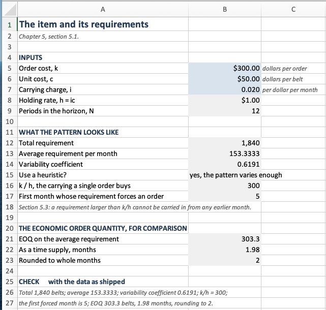
Data sheet, rows 1 to 27. Three inputs, the figures derived from them, the economic order quantity of Chapter 3 for comparison, and the check block. Notice cell B15, which reads the variability coefficient against the threshold of Section 5.6.1 and answers the question in words rather than leaving the reader to compare two numbers.
The requirements themselves are Figure 5.3. Column B is the only blue block on the sheet, and columns C, D and E hold one cost per period.
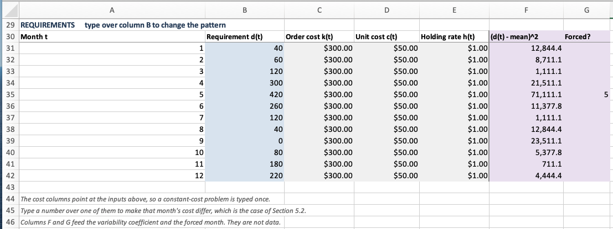
Data sheet, rows 29 to 46, the requirements schedule. Columns C, D and E point at the input cells above, so a constant-cost problem is typed once and a period-varying one needs no second workbook. Columns F and G are tinted and stand to the right of a rule, because they are derived and not data. Notice that column G is empty except in month 5, where 420 belts exceed \(k/h = 300\) and 1 forces an order.
5.8.2 Costing a Plan
The Plans sheet is the ledger of Example 5.1, made general. Four plans sit side by side, each with two columns: an order column the reader types into and an ending-inventory column that computes Equation 5.1 as = previous end + order - requirement.
The results block above them counts the orders with COUNTIF on the order column, charges carrying with SUMPRODUCT(Dls_h, end column), and reports the penalty against the optimum on the next sheet. Four plans are shipped: lot-for-lot, the fixed economic order quantity, the periodic rule at \(T = 2\), and a fourth to type over.
A negative number in an ending-inventory column is a shortage, which Section 5.1.2 forbids. Nothing on the sheet prevents one from appearing. The sheet evaluates whatever plan is typed into it, including infeasible ones, and it is the reader’s job to look.
Figure 5.4 is the whole sheet. Read a plan by reading one pair of columns downward and then the block above it.
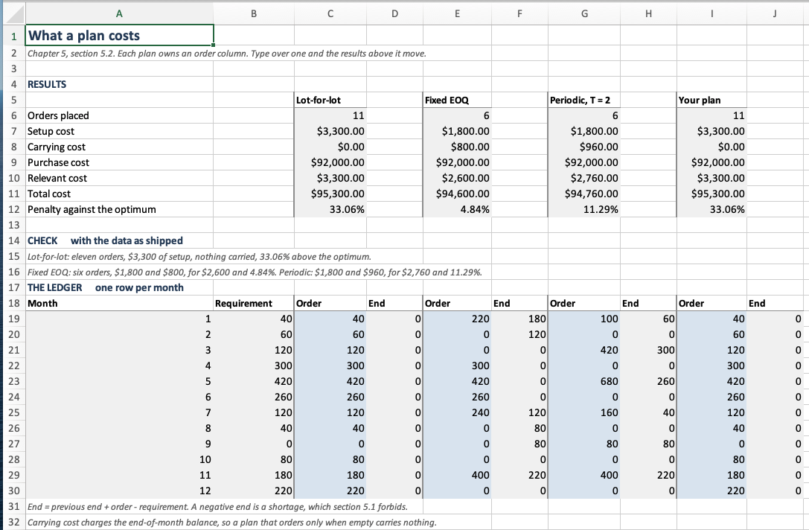
Plans sheet, rows 1 to 32. Four plans sit side by side, each owning an order column and an ending-inventory column, with a rule between the pairs. The three shipped plans reproduce the three rows of Table 5.3 exactly, so the sheet can be checked against the chapter before it is trusted with a plan of your own. Notice the ending-inventory column under lot-for-lot: it is zero in every month, which is what “carries nothing” means when you look at it rather than read it. Notice also that the purchase cost is $92,000 under all four plans, which is Section 5.2.1 made visible.
5.8.3 The Recursion and the Traceback
The WagnerWhitin sheet has four blocks, and the first three match the three blocks of Algorithm 5.1. Nothing on it is typed.
Figure 5.5 is what the sheet answers, and it is the block to read first.
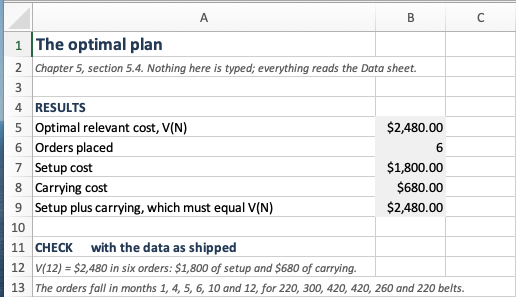
WagnerWhitin sheet, rows 1 to 13. Nothing here is typed. Row 9 exists to be compared with row 5: the setup and carrying of the plan the sheet traced out must add to \(V(N)\), because the recursion and the ledger are two readings of the same numbers, and a sheet that has been edited will usually break that first.
The window costs occupy an \(N\) by \(N\) upper triangle. Rather than write Equation 5.7 out in each cell, each cell adds one period to the cell on its left: \[ w(t,u) = w(t,u-1) + d_u \sum_{r=t}^{u-1} h_r , \] with \(w(t,t) = k_t\) on the diagonal. That is one short formula, filled right and down, and it is also the increment Example 5.2 read off row 1. The triangle is Figure 5.6.
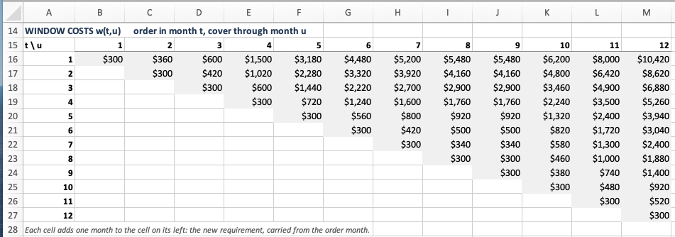
The recursion occupies a second triangle of the same shape, one entry for each \(t\) and \(u\), holding \(V(t-1) + w(t,u)\). Above it, \(V(u)\) is the MIN down column \(u\) and \(S(u)\) is MATCH of that minimum in the same column. Laying the candidates out instead of collapsing them into one formula per period is the point of the sheet. Table 5.5 is a table the reader is handed in the text, and Figure 5.7 is a range the reader can look at.
The traceback sits below them and is the only part that needs thought. It walks backward, so each step reads the pointer of the period before the one the previous step started in, and stops when a step starts in period 1. INDEX on the \(S\) row does the walk without a macro.
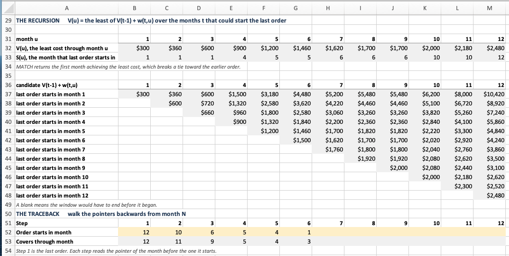
The fourth block converts the chain into an order quantity per period, with COUNTIF to ask whether this period starts an order and INDEX(Dls_d,a):INDEX(Dls_d,b) to total what it covers. Figure 5.8 is that block, and its two totals are the arithmetic check the sheet is built around.
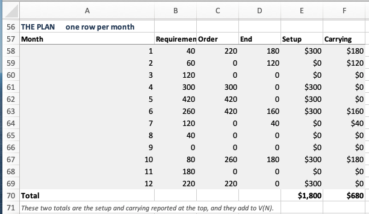
5.8.4 The Three Rules
The Heuristics sheet illustrates Section 5.5.1’s claim. Every rule on it reads the same window costs from the sheet before it, so the three answers in Figure 5.9 differ because the rules differ and for no other reason.
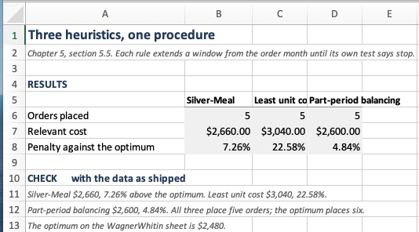
Heuristics sheet, rows 1 to 13. The three columns are the three heuristic rows of Table 5.12, computed on this sheet from the window costs of the last one.
Each rule gets a triangle of scores over the same \((t,u)\) pairs, and beside it a triangle of zeros and ones answering “does the rule stop here?” The stop period for an order placed in period \(t\) is then MATCH(1, ...) along row \(t\), the first period whose answer is one. Figure 5.10 is Silver-Meal’s scores and Figure 5.11 is the test that reads them.
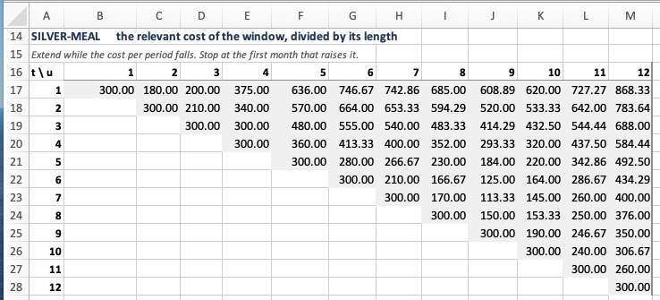
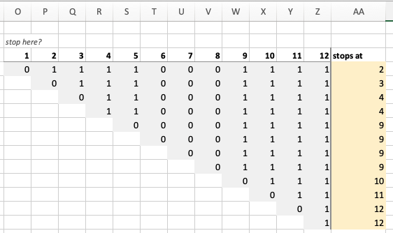
MATCH finds, and the yellow column collects them. Notice that the column reads 2, 3, 4, 4, then 9 four times over. A rule that reaches month 9 from anywhere in months 5 through 8 stops in the same place, which is what a period requiring nothing does to a rule that divides by the length of the window.
Figure 5.12 is the same pair of blocks for least unit cost, and only the divisor has changed. That one change is enough to make the rule order 220 belts in month 1 where Silver-Meal orders 100.
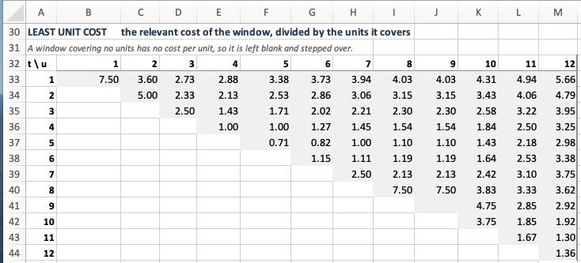
Part-period balancing needs a different test, and Figure 5.13 shows why. Its score is what the window carries, which only grows as the window grows, so the last period at or under \(k_t\) can be found with an ordinary ascending MATCH and no triangle of ones is needed. The two neighbors are then compared to see which comes closer. A score that can fall, as Silver-Meal’s can, cannot be looked up that way.
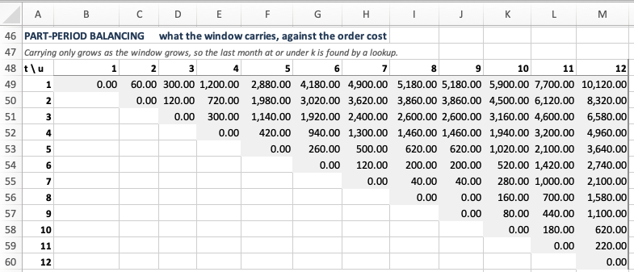
Below the triangles, a chain row per rule starts at period 1 and reads each order’s start from the previous order’s stop, and a ledger per rule turns the chain into a plan and a cost. Figure 5.14 is both, and the three relevant costs it totals are the three heuristic rows of Table 5.12.
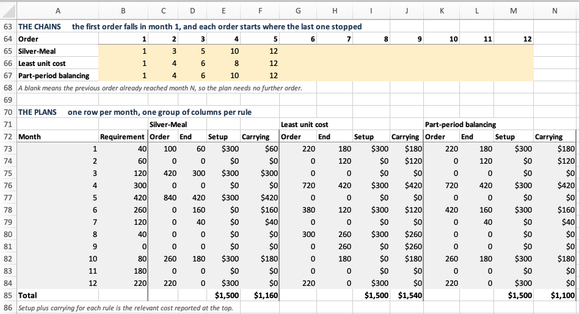
5.8.5 The Mixed Integer Program
The Solver sheet is Equation 5.9 laid out one row per period: the order quantity and the binary flag as changing cells, the balance and the two cost terms as formulas, and a column holding \(Q_t - M y_t\), which Solver constrains to be at most zero. The sheet ships holding the optimal plan, so the objective already reads $2,480. Clear the two changing columns and Solver finds its way back. Figure 5.15 is the whole sheet, instructions and all.
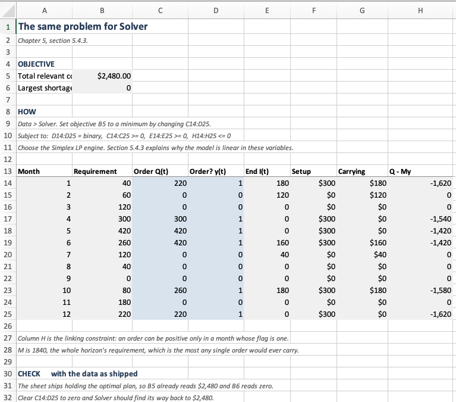
Solver sheet, rows 1 to 32, with the constraints written out above the model. Column C is \(Q_t\) and column D is \(y_t\), and the two together are the changing cells. Column H is \(Q_t - My_t\), which Solver holds at or below zero, and that single column is the whole of what makes Equation 5.9 linear. The sheet ships holding the optimal plan, so the objective in B5 reads $2,480 and the shortage in B6 reads zero. Notice column H in the months that order: it is a large negative number, meaning the linking constraint is slack and doing nothing. It binds only at zero, which is its job, and a reader who expects a constraint to be tight at the optimum should look at this column and ask why this one is not.
5.8.6 What the Worksheet Cannot Do
The rolling horizon of Section 5.7 is not in the workbook, and it is not an oversight. Table 5.14 is the cost of a sequence of twelve plans, eleven of which were computed, discarded, and never executed. A worksheet holds one instance of a model. Producing Table 5.15 needs 2,000 schedules solved twelve times each under two rules, or 48,000 solves, and a worksheet that is asked to do that stops being a thing anyone can read.
That is the boundary. A worksheet is the right tool for a model you want to look at, and the wrong tool for a model you want to run many times. That is where Section 5.9 begins.
5.9 Designing the Software
Section 5.8 built the models as worksheets, where the structure is visible. A program has no such thing. Its structure is a set of decisions about which classes exist and what each one is responsible for, and none of those decisions leaves a mark in the finished code. So we make them first, in the order such an analysis proceeds: what the software must do, what the domain calls things, what each thing knows and does, and how they collaborate.
This chapter is a good one to design, because at first glance it is six unrelated recipes and at second glance it is one recipe with six settings. Getting that right in the code is what makes Table 5.12 a comparison.
5.9.1 What the Software Must Do
Reading back over the chapter, we find that the software has to
- hold a requirements schedule for one item, with costs that may vary by period,
- price any window \(w(t,u)\),
- evaluate a plan someone else chose, reporting setup, purchase and carrying separately,
- produce a plan under lot-for-lot, an adjusted economic order quantity, a periodic order quantity, Silver-Meal, least unit cost, part-period balancing, and Wagner-Whitin,
- report the penalty of one plan against another, and
- roll a horizon forward, committing part of each plan and discarding the rest.
Requirement 6 is the one Section 5.8 could not meet, and it is the reason for writing a program at all.
5.9.2 Finding the Nouns
Underline the nouns in the requirements, and three survive.
A requirements schedule is what the planner is handed. It is the item’s requirements and its costs over a horizon, and it is the only thing in the chapter that is data and not decision.
A plan is what the planner produces. It is an order quantity per period, and it knows what it costs.
A rule is how one becomes the other. Seven of them appear in this chapter, and Section 5.6 ranks them, which means the software has to be able to hold one without knowing which.
Two candidate nouns are instructive rejections.
Window looks like a class. It has a start, an end, a cost, and the chapter talks about it constantly. It fails because a window has no behavior of its own and no life of its own. It exists for the length of one comparison inside one rule, and \(w(t,u)\) is a function of the schedule and two integers. Thus, making it a class would put \(N^2/2\) objects on the heap to hold a number apiece.
Order also looks like a class, and it is a real thing in a warehouse. Here it is \(Q_t\), a number in a position. Every question the chapter asks about an order is a question about a plan: how many are there, what do they cost, and when do they fall.
Thus, the schedule owns the window cost. That is the decision the rest of the design rests on. Every rule in Table 5.12 prices the same windows, so computing them in one place means the heuristics and the algorithm are compared on identical numbers and not on two implementations of Equation 5.7.
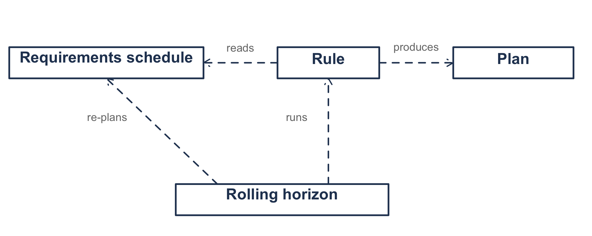
5.9.3 What Each Thing Knows and Does
For each of the three we write a card, listing what it is responsible for and whom it needs in order to meet that responsibility.
| Class | Knows and does | Collaborates with |
|---|---|---|
RequirementsSchedule |
the requirements and the three cost streams; the requirement over a span; the unit cost held from one period to another; the window cost; the variability coefficient; the forced order period | LotSizingPlan |
LotSizingPlan |
the order quantities; ending inventory; setup, purchase and carrying; whether it orders only when empty; its penalty against another plan | RequirementsSchedule |
LotSizingRule |
how far a replenishment should reach | RequirementsSchedule, LotSizingPlan |
RollingHorizon |
the true schedule, the planning window, the frozen span; what the committed orders actually cost | all three |
Table 5.16 illustrates one thing by leaving it out. A plan does not know its ending inventory as stored data. Equation 5.1 determines the inventory from the orders, so storing both would allow a plan to exist whose inventory no sequence of orders produces. The plan stores the quantities and computes the rest.
Notice also that the plan validates itself. A plan that runs short in some period violates assumption 6, and the constructor refuses it. That is not defensive programming for its own sake. Thus, every plan anywhere in the program is feasible, and no method downstream has to ask.
5.9.4 The Schedule
class RequirementsSchedule(
val label: String,
requirements: List<Double>,
orderCosts: List<Double>,
unitCosts: List<Double>,
holdingRates: List<Double>,
) {
/** The number of periods in the planning horizon, written N in the text. */
val horizon: Int get() = d.size
/** The periods, 1 through N, as a range to iterate over. */
val periods: IntRange get() = 1..horizon
/** The requirement of periods [from] through [through], written d[t,u]. */
fun requirementOver(from: Int, through: Int): Double {
requireWindow(from, through)
return (from..through).sumOf { d[it - 1] }
}
}Periods are numbered 1 through \(N\) on the outside and from zero on the inside, which is the ordinary arrangement. The alternative, exposing zero-based periods, would make every call site translate and every example in this chapter read differently from the text.
The costs arrive as four parallel lists instead of four scalars, so a period-varying instance needs no second class. For example, the constant-cost case that every worked example in this chapter utilizes is a factory method:
companion object {
/**
* The common case: one order cost, one unit cost and one carrying charge for the
* whole horizon, with h = ic as in Section 1.5.3.
*/
fun constantCosts(
label: String,
requirements: List<Double>,
orderCost: Double,
unitCost: Double,
carryingCharge: Double,
): RequirementsSchedule = RequirementsSchedule(
label = label,
requirements = requirements,
orderCosts = List(requirements.size) { orderCost },
unitCosts = List(requirements.size) { unitCost },
holdingRates = List(requirements.size) { carryingCharge * unitCost },
)
}The window cost is the schedule’s central method, and it is memoized, since every rule asks for the same \(N(N+1)/2\) values and Section 5.4.1 requires the arc costs to be settled before any decision is taken.
/**
* The window cost: order in [from] enough to cover the requirements of periods
* [from] through [through], and pay for the holding that implies.
*/
fun windowCost(from: Int, through: Int): Double {
requireWindow(from, through)
val key = (from - 1) * horizon + (through - 1)
cached[key]?.let { return it }
val value = k[from - 1] + (from..through).sumOf { unitCostHeld(from, it) * d[it - 1] }
cached[key] = value
return value
}
/**
* Setup plus carrying for a window. This is the cost the heuristics compare. The
* purchase term is left out on purpose: it is the same under every plan while the
* unit cost is constant, and a criterion that divides by the length of the window
* would otherwise be dominated by it.
*/
fun relevantWindowCost(from: Int, through: Int): Double =
orderCostIn(from) + carryingCostOver(from, through)Two window costs, and the difference between them is not cosmetic. Equation 5.4 includes the purchase term and the recursion uses it, and that is right: adding the same constant to every plan changes no comparison. A heuristic that divides by the length of the window is a different matter. The purchase term grows with the window while the setup does not, so a cost-per-period built on Equation 5.4 falls simply because the window is longer, and Silver-Meal would extend to the end of the horizon on every instance. It has to divide the relevant cost, and relevantWindowCost supplies it.
5.9.5 Three Rules Are One Rule
Section 5.5.1 claims that Silver-Meal, least unit cost and part-period balancing are one procedure with three stopping rules. If that claim is true, the code should contain the procedure once.
interface LotSizingRule {
val name: String
fun plan(schedule: RequirementsSchedule): LotSizingPlan
}
abstract class WindowRule(override val name: String) : LotSizingRule {
/** The figure of merit for covering [from] through [through], or null to skip. */
protected abstract fun scoreOf(
schedule: RequirementsSchedule,
from: Int,
through: Int,
): Double?
final override fun plan(schedule: RequirementsSchedule): LotSizingPlan {
val orders = mutableListOf<Int>()
var from = 1
while (from <= schedule.horizon) {
orders.add(from)
from = 1 + lastPeriodCovered(schedule, from)
}
return schedule.planFrom(orders)
}
/** How far a replenishment placed in [from] should reach. */
fun lastPeriodCovered(schedule: RequirementsSchedule, from: Int): Int {
var best = from
var previous: Double? = null
for (through in from..schedule.horizon) {
val score = scoreOf(schedule, from, through) ?: continue
if (previous != null && score > previous + TOLERANCE) break
previous = score
best = through
}
return best
}
}Then two of the three rules are three lines apiece.
/** Silver-Meal: the least cost per period. */
object SilverMeal : WindowRule("Silver-Meal") {
override fun scoreOf(schedule: RequirementsSchedule, from: Int, through: Int): Double =
schedule.relevantWindowCost(from, through) / (through - from + 1)
}
/** Least unit cost: the least cost per unit. */
object LeastUnitCost : WindowRule("Least unit cost") {
override fun scoreOf(schedule: RequirementsSchedule, from: Int, through: Int): Double? {
val units = schedule.requirementOver(from, through)
return if (units <= 0.0) null else schedule.relevantWindowCost(from, through) / units
}
}That is Table 5.9, executable. The nullable return is the third column of that table’s one irregularity: a window covering no units has no cost per unit, so the rule steps over it instead of dividing by zero. Month 9 of the belt is such a period.
The third rule does not fit, and forcing it in would be the mistake.
/**
* Part-period balancing: extend until the carrying cost of the window is as close as
* it can get to the order cost.
*
* It does not fit WindowRule because it does not walk a score to a minimum. It walks
* a gap to its closest approach, and the period it keeps may be the one before the
* test failed and not the one that failed.
*/
object PartPeriodBalancing : LotSizingRule {
override val name: String = "Part-period balancing"
fun lastPeriodCovered(schedule: RequirementsSchedule, from: Int): Int {
val setup = schedule.orderCostIn(from)
var best = from
for (through in from + 1..schedule.horizon) {
val carried = schedule.carryingCostOver(from, through)
if (carried > setup) {
val below = schedule.carryingCostOver(from, through - 1)
return if (abs(carried - setup) < abs(below - setup)) through else through - 1
}
best = through
}
return best
}
}A template method earns its place when three things share a shape, and should be abandoned the moment a fourth thing only appears to. Part-period balancing can step back, and a stopping rule that returns “the one before the one that failed” cannot be expressed as a figure of merit walked to a minimum. Section 5.8.4 found the same boundary in the worksheet, where the two walking rules need a triangle of stopping tests and part-period balancing needs an ascending lookup. That two independent implementations drew the line in the same place is a sign the line is in the domain and not in either implementation.
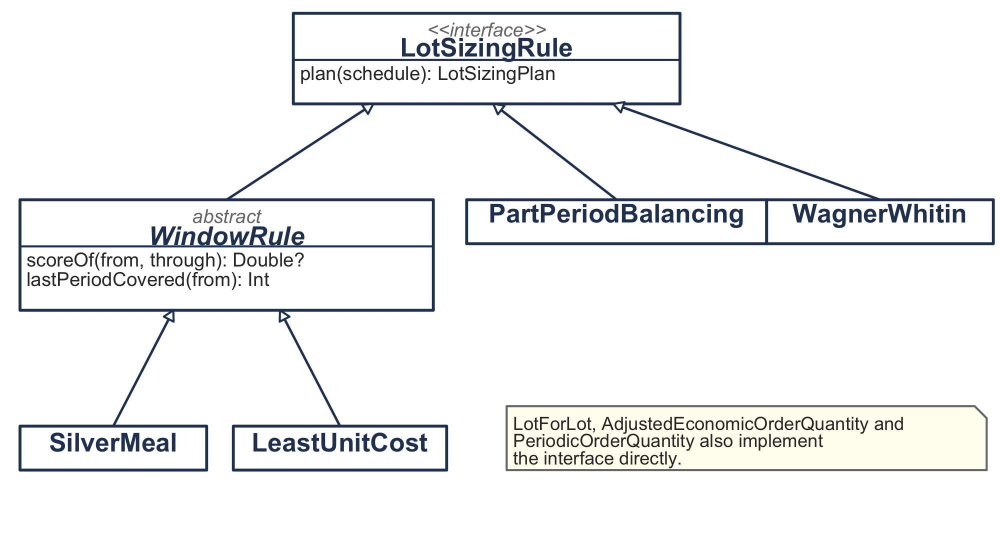
5.9.6 The Algorithm Is Not a Heuristic
WagnerWhitin implements LotSizingRule and shares none of WindowRule. That is the arrangement Section 5.5 describes: an optimal algorithm and a stopping rule are different kinds of thing, and the interface says only that both answer the same question.
object WagnerWhitin : LotSizingRule {
override val name: String = "Wagner-Whitin"
/** The value function, the predecessor pointers, and the plan they trace out. */
fun solve(schedule: RequirementsSchedule): Solution {
val n = schedule.horizon
val value = DoubleArray(n + 1)
val from = IntArray(n + 1)
for (t in 1..n) {
var best = Double.MAX_VALUE
var argument = 1
for (s in 1..t) {
val candidate = value[s - 1] + schedule.windowCost(s, t)
// A tie keeps the earliest period achieving it, the same one that
// scanning s upward with a strict comparison keeps, and that MATCH
// finds on the worksheet. Both artifacts must report the same S(t).
if (candidate < best - TOLERANCE) {
best = candidate
argument = s
}
}
value[t] = best
from[t] = argument
}
...
}
}solve returns more than a plan. It returns \(V\) and \(S\), because Example 5.3 prints them and because a reader who wants to check the traceback needs the pointers. A method that returned only the plan would make Table 5.7 impossible to produce without solving the problem twice.
The two economic order quantity rules call into Chapter 3 instead of recomputing it.
class AdjustedEconomicOrderQuantity : LotSizingRule {
override fun plan(schedule: RequirementsSchedule): LotSizingPlan {
val quantity = EconomicOrderQuantity.orderQuantityFor(
orderCost = schedule.orderCostIn(1),
demandRate = schedule.averageRequirement,
holdingRate = schedule.holdingRateIn(1),
)
...
}
}This is the same EconomicOrderQuantity that Section 3.11 built, used unchanged. Equation 3.17 appears once in this book’s code, so there is one place to correct when it is wrong.
5.9.7 How the Objects Solve It
Figure 5.18 illustrates one call. The caller hands a rule a schedule and gets a plan.
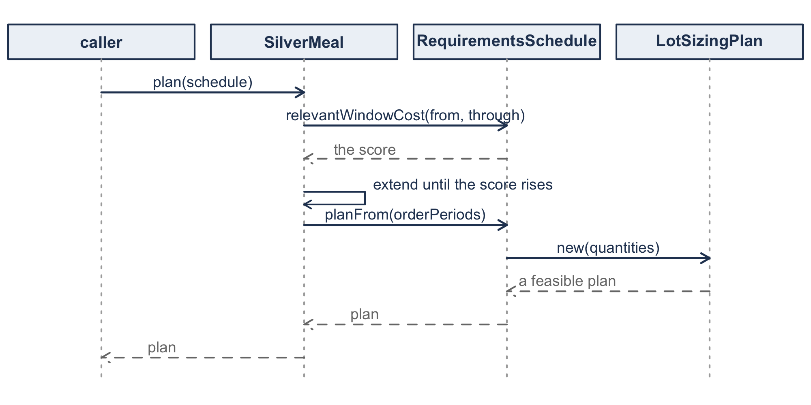
The schedule sits in the middle of every collaboration. That follows from giving it the window cost. A rule never computes a cost; it decides which costs to ask for. That is what lets Section 5.6 rank the rules: they are being compared on their decisions and not on their arithmetic.
5.9.8 Rolling the Horizon
RollingHorizon is the class that exists because a worksheet cannot do this.
class RollingHorizon(
private val actual: RequirementsSchedule,
private val planningHorizon: Int,
private val freeze: Int = 1,
) {
/**
* Run [rule] on a window that advances by [freeze] periods at a time, implementing
* only the frozen orders, and report what the implemented orders actually cost.
*/
fun realizedPlan(rule: LotSizingRule): LotSizingPlan {
val n = actual.horizon
val placed = DoubleArray(n)
var period = 1
while (period <= n) {
val onHand = carriedInto(placed, period)
val committedTo = minOf(period + freeze - 1, n)
val net = netRequirements(period, minOf(period + planningHorizon - 1, n), onHand)
if (net != null) {
val plan = rule.plan(net.window)
for (t in period..committedTo) {
val offset = t - net.firstPlanned + 1
if (offset in 1..net.window.horizon) placed[t - 1] = plan.orderIn(offset)
}
}
period = committedTo + 1
}
return LotSizingPlan(actual, placed.toList())
}
}The subtle part is netRequirements. The planner at period \(t\) may be holding stock left over from an earlier order, and assumption 8 says a schedule starts empty. So the stock on hand is netted against the nearest requirements, exactly as a requirements record nets it, and planning begins at the first period the stock does not cover. Getting this wrong produces a plan that orders on top of stock it already has, which every rule in the chapter is supposed to forbid.
Notice that realizedPlan returns a LotSizingPlan built against the true schedule and not against any of the windows. The plans the rule produced along the way were mostly discarded. What is reported is the cost of the orders that were actually placed, the only thing Table 5.14 could mean.
5.9.9 Solving the Chapter’s Examples
Every figure in this chapter comes from running this code. The item of Table 5.1 is
val belt = RequirementsSchedule.constantCosts(
label = "Mower deck belt",
requirements = listOf(40.0, 60.0, 120.0, 300.0, 420.0, 260.0,
120.0, 40.0, 0.0, 80.0, 180.0, 220.0),
orderCost = 300.0, unitCost = 50.0, carryingCharge = 0.02,
)
println(belt.variabilityCoefficient) // 0.6191, Section 5.6
println(belt.forcedOrderPeriod()) // 5, Section 5.3Table 5.12 is a loop, and that is what the design was for.
val optimum = WagnerWhitin.plan(belt)
val rules = listOf(
LotForLot, AdjustedEconomicOrderQuantity(), PeriodicOrderQuantity(),
LeastUnitCost, PartPeriodBalancing, SilverMeal, WagnerWhitin,
)
for (r in rules) {
val p = r.plan(belt)
println("%-32s %6d %9.0f %9.0f %9.0f %8.2f%%".format(
r.name, p.orderCount, p.setupCost, p.carryingCost, p.relevantCost,
p.penaltyAgainst(optimum).relativeError * 100.0))
}Example 5.3 needs the recursion itself and not only its answer.
val quarter = RequirementsSchedule.constantCosts(
label = "First half year",
requirements = listOf(40.0, 60.0, 120.0, 300.0, 420.0, 260.0),
orderCost = 300.0, unitCost = 50.0, carryingCharge = 0.02,
)
val solution = WagnerWhitin.solve(quarter)
for (t in 1..6) {
val purchases = 50.0 * (1..t).sumOf { quarter.requirementIn(it) }
println("V(%d) = %.0f, S(%d) = %d"
.format(t, solution.valueAt(t) - purchases, t, solution.orderedFromAt(t)))
}The subtraction is Section 5.2.1. Equation 5.4 carries the purchase term, so valueAt carries it too, and what Example 5.3 reports is the relevant part. Leaving the term in shifts every \(V\) by the same amount and changes no decision, which is the argument of Section 5.2.1 seen from the other side.
And Table 5.14 is two lines per row.
for (window in 2..6) {
val sm = RollingHorizon(belt, window, freeze = 1).realizedPlan(SilverMeal)
val ww = RollingHorizon(belt, window, freeze = 1).realizedPlan(WagnerWhitin)
println("%d %.0f %.0f".format(window, sm.relevantCost, ww.relevantCost))
}Those four fragments produce every number the chapter prints. Section 5.10 collects what it argued with them.
5.10 Summary
The chapter removed the constant demand rate and everything that depended on it. With no repeating cycle there is no average cost per cycle to minimize, so the economic order quantity has nothing to be derived from. What replaces it is a finite horizon with a decision in every period.
Two properties make the problem small enough to solve. Zero-inventory ordering says an optimal plan never orders into a shelf that is not empty, which means a plan is nothing but a choice of order periods. The window cost \(w(t,u)\) prices any such choice, and it depends on no decision, so all of the window costs can be computed once.
Those two together turn the problem into a shortest path on an acyclic network, and Equation 5.8 solves it in \(O(N^2)\). The same problem is a mixed integer program, slower, but it accepts constraints the recursion cannot.
The heuristics exist because Equation 5.8 needs the whole horizon and the whole horizon is a forecast. Three of them are one procedure with three stopping rules. On the mower deck belt they land between 4.84% and 22.58% above the optimum, which is the same order of magnitude as the penalty for getting \(k/h\) wrong by a factor of two.
The rolling horizon is where all of this is actually used, and it removes Wagner-Whitin’s guarantee. It does not, on the evidence of Table 5.15, hand the advantage to a heuristic. What it does is make the question empirical.
Chapter 6 takes these methods up again with the requirements computed from a bill of material instead of forecast. That is where they do most of their work.
| Symbol | Meaning |
|---|---|
| \(N\) | number of periods in the horizon |
| \(d_t\) | requirement in period \(t\) |
| \(d[t,u]\) | requirement of periods \(t\) through \(u\) |
| \(k_t\), \(c_t\), \(h_t\) | order cost, unit cost, holding rate in period \(t\) |
| \(Q_t\), \(I_t\), \(y_t\) | order quantity, ending inventory, order indicator |
| \(\hat{c}(t,u)\) | cost of a unit bought in \(t\) and used in \(u\) |
| \(w(t,u)\) | cost of a replenishment in \(t\) covering through \(u\) |
| \(V(u)\), \(S(u)\) | least cost through period \(u\), and the period its last order starts in |
| \(VC\) | variability coefficient |
5.11 Exercises
Unless an exercise says otherwise, use these conventions so that your answer and the instructor’s agree. Periods are numbered from one. Inventory starts at zero and ends at zero. Carrying cost is charged on the balance at the END of a period, so a unit that arrives and is consumed in the same period is charged nothing. Report costs to the nearest cent, penalties as percentages to two decimal places, and the variability coefficient to four. Report relevant cost, setup plus carrying, unless the exercise asks for the total. Where two plans tie, report the one whose last order starts in the earlier period. That is what Equation 5.8 returns when the minimum is scanned upward in \(t\).
5.11.1 Terminology and Concepts
Exercise 5.1 Define each of the following in one sentence, and say which section of this chapter introduced it.
- requirements schedule
- window cost
- zero-inventory ordering
- relevant cost
- variability coefficient
- part-period
- rolling horizon
- nervousness
Exercise 5.2 State whether each of the following is true or false, and give one sentence of justification. A one-word answer earns nothing.
- An optimal plan never places an order in a period that begins with stock on hand.
- Because the Wagner-Whitin algorithm is optimal, it is the method a planner should use when the horizon rolls forward one period at a time.
- The window cost \(w(t,u)\) depends on which periods the plan chooses to order in.
- Two plans that place the same number of orders cost the same.
- Under the convention of this chapter, a unit that arrives in a period and is consumed in that period is charged no carrying cost.
- The variability coefficient is measured in units per period.
- Adding the same constant to every window cost cannot change which plan the recursion selects.
- When ordering is free, lot-for-lot is optimal.
Exercise 5.3 Choose the best answer.
- The window costs are computed before any search begins because
- it saves memory; (b) they do not depend on any decision; (c) the heuristics need them before the algorithm does; (d) a worksheet cannot compute them on demand.
- Silver-Meal’s failure on the mower deck belt is triggered by
- a large requirement early in the horizon; (b) a run of declining requirements followed by a period with none; (c) an order cost that is too high; (d) a holding rate that is too low.
- Put a ceiling on the size of any single order and Equation 5.8 no longer applies, because (a) the window costs become wrong; (b) zero-inventory ordering no longer holds; (c) the network acquires a cycle; (d) the horizon is no longer finite.
- The purchase term may be dropped from the objective when
- the horizon is short; (b) the unit cost is the same in every period; (c) the holding rate is small relative to the order cost; (d) never, and the chapter is wrong to do it.
- A heuristic is used instead of the Wagner-Whitin algorithm mainly because
- the algorithm is too slow; (b) the algorithm needs requirements out to period \(N\) and those are a forecast; (c) the algorithm cannot be done in a worksheet;
- the algorithm requires constant costs.
Exercise 5.4 An analyst argues that since the Wagner-Whitin algorithm is optimal and runs in \(O(N^2)\), the heuristics of Section 5.5 are of historical interest only and should be dropped from the course.
Write a reply of at most 150 words. Your reply should name the assumption the argument depends on, say where in Section 5.1.2 it appears, and cite one number from this chapter.
Exercise 5.5 Section 5.3.1 proves that an optimal plan orders only into an empty shelf, and every method in this chapter rests on it.
- State where the proof would fail if backorders were permitted at a cost per unit per period.
- State where it would fail if the unit cost fell partway through the horizon.
- State where it would fail under a ceiling on the size of any single order.
- For each, say whether the problem is still a shortest path over some network, and if so what the nodes would have to be.
5.11.2 Working the Methods by Hand
Exercise 5.6 An item has requirements of 30, 50, 10, 90, and 40 units over five periods. Ordering costs $120, the item costs $8, and the carrying charge is 2.5% per period.
- Compute \(h\) and the variability coefficient. Does Section 5.6.1 call for a heuristic?
- Cost the lot-for-lot plan.
- Cost the plan that orders in periods 1 and 4 only.
- Which is cheaper, and by how much?
Exercise 5.7 For the item of Exercise 5.6, compute the full \(5 \times 5\) table of window costs \(w(t,u)\) using Equation 5.7. Verify your entry for \(w(1,4)\) by costing the corresponding plan directly.
Exercise 5.8 Solve Exercise 5.6 to optimality with the recursion of Equation 5.8. Report \(V(u)\) and \(S(u)\) for every period, the traceback, the optimal plan, and its relevant cost.
Exercise 5.9 Apply Silver-Meal, least unit cost and part-period balancing to Exercise 5.6. Report each plan and its penalty against the optimum of Exercise 5.8. Explain why the answers come out the way they do.
Exercise 5.10 Take the last six months of the mower deck belt, months 7 through 12 of Table 5.1, and treat them as a horizon of their own numbered 1 through 6. The costs are unchanged: \(k = \$300\), \(c = \$50\), \(i = 0.02\) per month.
| \(t\) | 1 | 2 | 3 | 4 | 5 | 6 |
|---|---|---|---|---|---|---|
| \(d_t\) | 120 | 40 | 0 | 80 | 180 | 220 |
- Compute the variability coefficient and check 1. Does any period force an order?
- Build the \(6 \times 6\) table of window costs.
- Solve the recursion, report \(V\) and \(S\), and give the optimal plan and its cost.
- Apply all three heuristics. Report each plan and its penalty.
- Period 3 requires nothing. Say precisely what each of the three rules does when its window reaches that period, and which of them has to be told about it in code.
Exercise 5.11 Section 5.2.2 explains why the chapter compares an adjusted economic order quantity and not a fixed one. This exercise makes the reason concrete. Take the belt of Table 5.1 with \(k = \$300\), \(c = \$50\) and \(i = 0.02\) per month, and apply the strict rule: order exactly \(Q^{*} = 303.3150\) belts whenever the balance would otherwise go negative, and order twice in a month if once is not enough.
- Build the ledger and report the order quantities and the ending balances.
- How many belts are ordered in total, against a requirement of 1,840?
- What is left at the end of month 12?
- Which of Section 5.1.2 does the plan break, and why can no rule of this shape avoid breaking it?
- The relevant cost comes to $3,792.49. Explain why comparing that with the $2,600 of Table 5.12 is not a fair comparison, and say what you would have to do to the plan to make it one.
Exercise 5.12 Section 5.5 notes that part-period balancing comes in two versions. The original takes the largest window whose carrying is at or under \(k_t\), and so never overshoots. The modification compares the two windows either side of \(k_t\) and keeps whichever comes closer.
- Using the carrying figures of Table 5.10 and the rest of the belt, work both versions over the full twelve months and report the stop period for each starting month.
- Report each version’s plan, its relevant cost and its penalty.
- Which is better here? Is the answer what you expected?
- Give the shape of a requirements pattern on which the original must do at least as well as the modification, and say why.
5.11.3 Modeling Problems
Exercise 5.13 The same distributor stocks a spindle assembly for the same line of mowers. It costs $250 to place an order, the assembly costs $25, and the carrying charge is 3% per month. The requirements for the coming year are
| \(t\) | 1 | 2 | 3 | 4 | 5 | 6 | 7 | 8 | 9 | 10 | 11 | 12 |
|---|---|---|---|---|---|---|---|---|---|---|---|---|
| \(d_t\) | 90 | 70 | 60 | 50 | 140 | 240 | 300 | 180 | 60 | 40 | 40 | 110 |
- Compute \(h\), the average requirement, the variability coefficient, \(k/h\), the economic order quantity on the average requirement, and its time supply in months.
- Does 1 force an order in any month?
- Cost the lot-for-lot plan and the periodic order quantity plan at the time supply from part (a).
- Solve the problem to optimality. Report \(V\), \(S\), the plan and its relevant cost.
- Apply all three heuristics and report the penalty of each.
- Compare your ranking of the three heuristics with Table 5.12. Does the belt’s ranking survive?
Exercise 5.14 Table 5.12 ranks the methods on the belt at \(k = \$300\). This exercise asks whether the ranking is a property of the methods or of that number.
Keep the requirements of Table 5.1, \(c = \$50\) and \(i = 0.02\) per month, and solve the problem again at \(k = \$120\) and at \(k = \$900\).
- For each, report \(k/h\) and the periods 1 forces.
- For each, report the optimal plan and its relevant cost.
- For each, report the penalty of lot-for-lot, Silver-Meal, least unit cost and part-period balancing.
- Tabulate the three settings side by side and say what happens to the ranking of the heuristics as \(k\) rises.
- At \(k = \$120\), use your answer to part (a) to say how many window costs the recursion actually has to compute, against the 78 it would need without
Exercise 5.15 An item has requirements of 10, 2, 12, 4 and 14 units over five periods. Ordering costs $40, the unit cost is $2, and the holding rate is $1 per unit per period.
- Compute the window costs including the purchase term, as in Equation 5.4.
- Solve the recursion and report the optimal plan.
- Separate the answer into relevant cost and purchase cost. Confirm that the purchase cost is the same under every feasible plan, and explain why.
- Now suppose the unit cost rises to $3 beginning in period 3 and stays there. Recompute the window costs and re-solve. Does the plan change, and is the purchase cost still the same under every plan?
Exercise 5.16 The variability coefficient of Equation 5.10 is the test for whether the methods of this chapter are worth using.
- Construct a twelve-period schedule with \(VC\) just under 0.2 and one with \(VC\) near 1.0, both with the same total requirement.
- For each, compute the penalty of an adjusted economic order quantity against the Wagner-Whitin optimum.
- Does the 0.2 threshold do what it claims on your two instances?
Exercise 5.17 Prove that if \(d_t h_{t-1} > k_t\) then every optimal plan orders in period \(t\). Then explain how the property can be used to split a twelve-period problem into two smaller ones, and say how much arithmetic that saves for the belt.
5.11.4 The Rolling Horizon and the Solver
Exercise 5.18 Take the mower deck belt of Table 5.1 and a planner who sees only three months ahead. Starting in month 1, solve the three-month problem, place that month’s order, advance one month, and repeat. Report the twelve orders actually placed and their cost, and compare with Table 5.14.
Exercise 5.19 Open the Solver sheet of Chapter5Models.xlsx, clear the order and flag columns to zero, and run Solver. Confirm that it reaches $2,480.
- Now add the constraint that no single order may exceed 400 belts. What does the plan cost?
- Explain why Equation 5.8 cannot answer part (a) without modification, and describe what would have to change.
Exercise 5.20 Section 5.7.3 describes three devices against nervousness. For each, say what it costs and under what circumstances you would recommend it. Use the first-month commitments reported in Section 5.7.3 to support your answer.
5.11.5 Using the Workbook
Exercise 5.21 Open Chapter5Models.xlsx and work entirely within it.
- On the
Datasheet, replace the requirements with those of Exercise 5.13 and set \(k\), \(c\) and \(i\) to that item’s values. Read the optimal cost off theWagnerWhitinsheet and the three heuristic costs off theHeuristicssheet, and check them against your answers to Exercise 5.13. - Restore the belt. On the
Planssheet, type the Wagner-Whitin plan of Table 5.8 into the fourth order column and confirm that the penalty reads 0.00%. - Now type a plan of your own into the same column that costs less than $2,600 and is not the optimum. Report it, or explain how the
WagnerWhitinsheet tells you in advance how many such plans there are. - On the
Heuristicssheet, find the row of the Silver-Meal block that produces the order of 840 belts. Read off the six scores along it from \(u = 5\) to \(u = 10\) and say which one the rule stopped at and why. - Change the requirement in month 9 from 0 to 200. Report what happens to the six scores of part (d), to the Silver-Meal plan, to the optimum, and to the penalty. Two of those four move in a direction most students do not predict.
5.11.6 Using the Software
Exercise 5.22 The code of Section 5.9 is in code/, package inventory.dynamiclotsizing. Build it with ./gradlew build and write a main of your own. Report the code you wrote alongside each answer.
Build the spindle assembly of Exercise 5.13 with
RequirementsSchedule.constantCosts. PrintaverageRequirement,variabilityCoefficientandforcedOrderPeriod(), and compute \(k/h\) fromorderCostIn(1)andholdingRateIn(1). Check all four against your answers to Exercise 5.13, and say what it means thatforcedOrderPeriod()returnsnull.Put the seven rules in a list and loop over it, printing each rule’s
name,orderCount,setupCost,carryingCost,relevantCostandpenaltyAgainst(WagnerWhitin.plan(spindle)). Report the table. Which rule is worst, and does Section 5.6.3 predict it?Run
RollingHorizon(spindle, w, freeze = 1).realizedPlan(rule)for \(w = 2\) through 6, under bothSilverMealandWagnerWhitin, and report the two rows as Table 5.14 is reported. Two things happen on this item that do not happen to the belt. Identify both and say which claim of Section 5.7.2 they instantiate.You worked both versions of part-period balancing over the belt by hand in
- The package implements only the modified one. Implement the original as a
LotSizingRule: extend the window while the carrying cost of the window is at or under \(k\), and stop before the period that would carry it past \(k\). UsecarryingCostOver(from, through)andplanFrom(orderPeriods). Check it against your hand answer on the belt, then run both versions on the spindle assembly. The two items do not rank the two versions the same way, so say which is the better rule and defend the answer.
- The package implements only the modified one. Implement the original as a
The study of Table 5.15 draws its schedules as follows.
fun schedules(count: Int, seed: Long, orderCost: Double): List<RequirementsSchedule> { val draw = java.util.Random(seed) val choices = listOf(0.0, 10.0, 20.0, 40.0, 80.0, 120.0, 200.0, 300.0) return (1..count).map { n -> var d: List<Double> do { d = (1..12).map { choices[draw.nextInt(choices.size)] } } while (d.first() <= 0.0 || d.sum() <= 0.0) RequirementsSchedule.constantCosts("Trial $n", d, orderCost, 50.0, 0.02) } }Call it as
schedules(2000, 20240501L, 200.0)and reproduce Table 5.15. Then raise the order cost to $600 and run it again. Report both tables and state the conditions under which Section 5.7.2’s conclusion holds.
5.11.7 From the Literature
Exercise 5.23 Wagner and Whitin (1958) is four pages long and is the origin of everything in Section 5.4. Read it.
- The paper states its result as a planning-horizon theorem rather than as a shortest path. State the theorem in the notation of this chapter.
- The paper’s recursion and Equation 5.8 are the same recursion. Identify the correspondence between its symbols and ours.
- The paper was published in 1958 and the method was not widely adopted. Using Section 5.5 and Section 5.7, give two reasons that have nothing to do with the speed of computers.